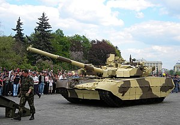

.png)
BM Oplot
Виробництво першого танка почалося в кінці 2008 року і зайняло три місяці. У травні 2009 року танк був прийнятий на озброєння Збройних сил України під назвою БМ «Оплот»[3]. Дебют нового українського танка відбувся 24 серпня 2009 року під час параду з нагоди Дня Незалежності України[4]. У 2009 році був укладений контракт на поставку 10 танків БМ «Оплот» Збройним силам України за ціною 29,5 млн гривень за одиницю, через нестачу фінансування виконання контракту було припинено. 20-24 лютого 2011 року БМ «Оплот» вперше був показаний за кордоном — на 10-й Міжнародній виставці озброєнь IDEX-2011 в Абу-Дабі. Експортна ціна одного танка «Оплот» в 2011 році становила 4,9 млн доларів США, в 2013 році — 4,89 млн доларів США. У грудні 2011 року заступник гендиректора ДК «Укроборонпром» Володимир Куратченко повідомив, що у виробництві танка беруть участь 40 підприємств України. Серійне виробництво танків «Оплот» почалося в 2013 році, однак перші приціли ПНК-6 були виготовлені в січні 2014 року. 4 лютого 2015 року генеральний директор ДК «Укроборонпром» Роман Романов оголосив, що в 2015 році буде випущено 40 танків «Оплот». У вересні 2018 року з'явилася інформація, що ведеться розробка нової модифікації, яка враховує останній досвід бойових дій на Донбасі. Ця модифікація буде серійно виготовлятися на потребу ЗС України.[5]
.jpg)
.jpg)
БМ Оплот
 Тип основний бойовий танкПоходження Україна Україна
Розробник ХКБМ
Виробник Завод імені В. О. Малишева
Вартість одиниці ~150 млн.грн
Виготовлення з 2009
Виготовлена
кількість
51 одиниця: - 49 серійних - 2 прототипи